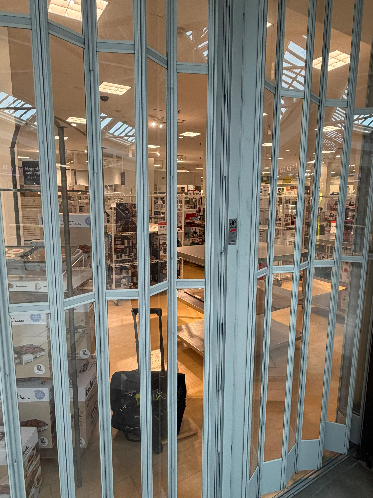
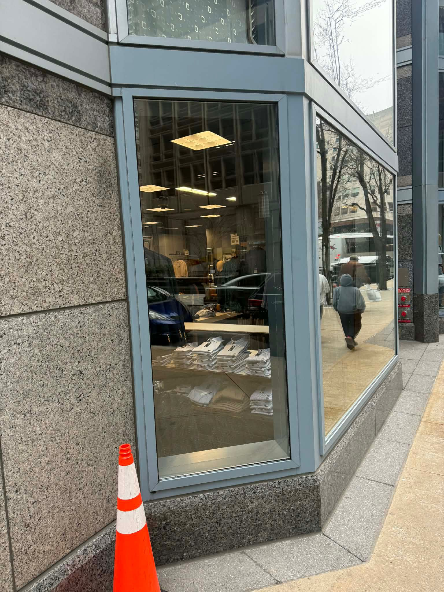
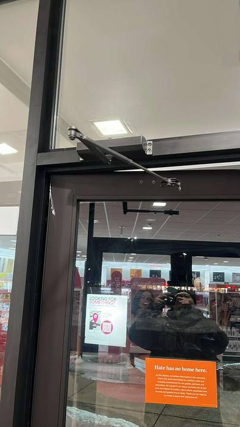

Emergency Glass Repair
24/7 response for unsafe glass conditions and shattered openings.
Dedicated Service Pages
Choose the service you need now. We handle glass repair near me, glass window repair, mobile glass repair, locksmith near me, and DC locksmith requests with fast phone-first dispatch.

24/7 response for unsafe glass conditions and shattered openings.

Restore secure entry and code-conscious door operation fast.

Secure your site first, then coordinate measured replacement.

Tempered and laminated storefront glass for commercial properties.

Panic bars, closers, locks, strikes, pivots, and threshold systems.

Home window glass, patio door glass, mirrors, and shower options.

Lockouts, rekeys, lock changes, and mobile locksmith response for urgent access issues.

Property manager-focused commercial glass response across multiple sites.
Popular Requests
| Service | Common Emergency Request | You Can Also Ask For |
|---|---|---|
| Emergency Glass Repair | emergency glass repair Arlington VA | 24/7 glass repair near me, urgent storefront glass repair |
| Emergency Door Repair | commercial door repair Washington DC | door closer repair, emergency door lock repair |
| Board-Up Service | emergency board up service Baltimore | same-day board up, storefront board up near me |
| Storefront Glass Repair | storefront glass repair Washington DC | retail storefront glass replacement, tempered storefront glass |
| Commercial Door Hardware | commercial door hardware repair DMV | panic bar repair, exit device repair, threshold repair |
| Residential Glass | residential window glass repair Arlington | home window replacement, patio door glass repair |
| Locksmith Services | emergency locksmith Arlington VA | commercial rekey service, lockout service near me |
Call now for emergency dispatch. For scheduled projects, send details through the quote form and we will follow up quickly.